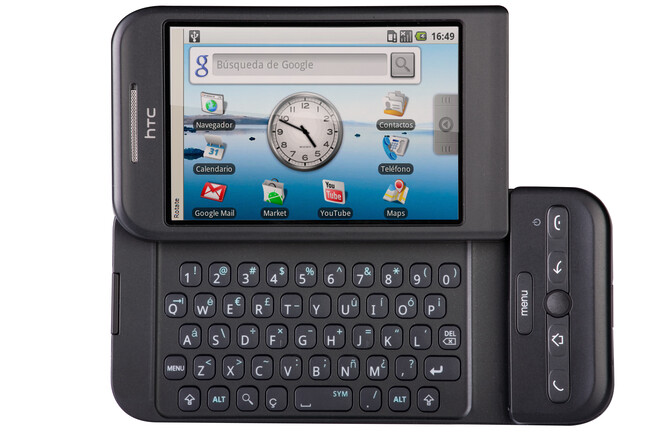

Android es un sistema operativo móvil de código abierto basado en el núcleo de Linux. Se diseñó principalmente para dispositivos de pantalla táctil, como teléfonos inteligentes y tabletas, pero su flexibilidad le ha permitido adaptarse a otros dispositivos, incluyendo televisores, relojes inteligentes y automóviles.
Android se caracteriza por su interfaz de usuario intuitiva y personalizable, que permite a los fabricantes de dispositivos y a los desarrolladores de aplicaciones modificar y adaptar el sistema a sus necesidades. Su modelo de código abierto fomenta la innovación y la creación de un vasto ecosistema de aplicaciones, disponible a través de la tienda Google Play Store.
La historia de Android se remonta a 2003, cuando fue fundado por Andy Rubin, Rich Miner, Nick Sears y Chris White. Al principio, la compañía tenía la visión de desarrollar un sistema operativo para cámaras digitales, pero pronto se dieron cuenta del potencial en el mercado de los teléfonos inteligentes.
En 2005, Google adquirió Android Inc., una jugada que inicialmente pasó desapercibida. Google vio en Android una oportunidad para entrar en el incipiente mercado de los teléfonos móviles y para competir con gigantes como Apple y Microsoft.
El 5 de noviembre de 2007, Google anunció oficialmente Android como un sistema operativo móvil de código abierto, junto con la Open Handset Alliance (OHA), un consorcio de empresas de hardware, software y telecomunicaciones comprometidas con el desarrollo del estándar abierto para dispositivos móviles.
El primer dispositivo comercial con Android fue el HTC Dream (también conocido como T-Mobile G1), lanzado en octubre de 2008. Aunque rudimentario en comparación con los estándares actuales, sentó las bases para el éxito futuro de Android.
A lo largo de los años, Google ha lanzado numerosas versiones de Android, cada una con un nombre de postre o dulce en orden alfabético, como "Cupcake", "Donut", "Eclair", "Froyo", "Gingerbread", "Honeycomb", "Ice Cream Sandwich", "Jelly Bean", "KitKat", "Lollipop", "Marshmallow", "Nougat", "Oreo" y "Pie". A partir de 2019, Google abandonó esta convención de nombres y pasó a utilizar números de versión, comenzando con Android 10.

Hoy en día, Android es el sistema operativo móvil más utilizado en el mundo, con miles de millones de dispositivos activos y una cuota de mercado dominante a nivel global. Su éxito se debe a su naturaleza de código abierto, la gran variedad de dispositivos que lo utilizan y el constante desarrollo y mejora por parte de Google y la comunidad de desarrolladores.
Volver al inicio